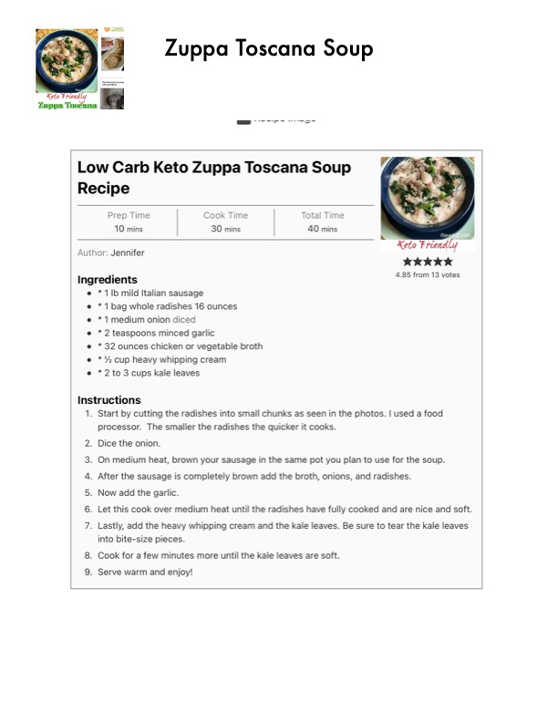

Low Carb Keto Zuppa Toscana Soup Recipe

Original cookbook page 108
Keto Friendly soup recipe
Prep: 10 mins • Cook: 30 mins • Total: 40 mins
Ingredients
- 1 lb mild Italian sausage
- 1 bag whole radishes, 16 ounces
- 1 medium onion, diced
- 2 teaspoons minced garlic
- 32 ounces chicken or vegetable broth
- ½ cup heavy whipping cream
- 2 to 3 cups kale leaves
Instructions
- Start by cutting the radishes into small chunks as seen in the photos. I used a food processor. The smaller the radishes the quicker it cooks.
- Dice the onion.
- On medium heat, brown your sausage in the same pot you plan to use for the soup.
- After the sausage is completely brown add the broth, onions, and radishes.
- Now add the garlic.
- Let this cook over medium heat until the radishes have fully cooked and are nice and soft.
- Lastly, add the heavy whipping cream and the kale leaves. Be sure to tear the kale leaves into bite-size pieces.
- Cook for a few minutes more until the kale leaves are soft.
- Serve warm and enjoy!
Recipe #108 from collection